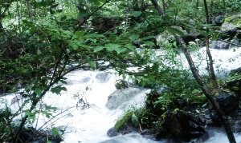
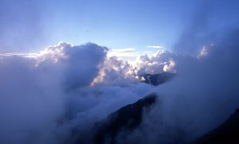
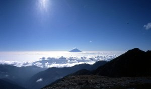
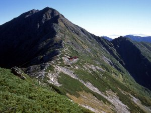
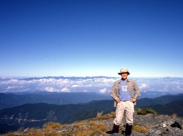

北岳＆間ノ岳登山 | 2004年9月 |
|---|---|
| 友人と以前から、我静岡市の頂点と言うべき、間ノ岳に登ろうと計画をしていました。最初5人のメンバーであったが、用事等の理由で最終的に２人しか残らなかった。 金曜夜立ちの土日で登山。宿泊は北岳山荘のテント場。つまりテント、食料等を持参。 出発の金曜日は雨が降っていたが、天気予報では現地は悪くないはず。そこそこ激しい降雨の真っ暗な国道52号を北へと走る。途中のコンビニで食料を調達。握り飯が欲しかったが、売り切れの為パンにする。 今回、我々は奈良田温泉から広河原に抜けて、広河原から登る一般的なルートだが、奈良田から広河原までの道は、時間帯通行規制となっているため、奈良田ゲート前で仮眠をします。 朝4時。ゲートが開き、開門を待ちわびていた車が一斉に飛び出す。洒落ではなく本当に飛び出す。先頭集団はココを、レース場と勘違いしているかのごとく攻める！ | |
|  大樺沢 |  北岳から北岳山荘に下りる道 |
| 広河原について、もう少し寝る。なにせ着いたのが夜12時半、起きたのが4時前。眠くてかなわない。6時ごろまで寝て、朝食を食べて出発。雨は降っていないものの、天気はどんよりとした曇り空。雲がすぐ頭の上にあるくらい、低く立ち込めています。 7時20分。登山道入口で、登山届を提出して大樺沢に入る。今回のルートは、大樺沢を沿って行き、八本歯ノコルから北岳に行くという左俣コースでと思っていました。天気がなんとも言えないので、今日北岳に行って明日間ノ岳に行くか、今日間ノ岳に行って明日北岳に行くか、悩んでいました。途中の二俣まで、川の写真を撮りながらゆっくりと進み、八本歯ノコル目指して歩き始めた。 ・・・勾配がきつい。ココまでは余り気にしなかったが、4時間以上歩き続けて疲れが出始めたのか、背中の荷物が重荷になってきた。やっぱテントとか重い。一歩一歩がきつく、まさに自分との戦いになってきました。『一人で来ていたら諦めているだろうな。』等と思いながら登ります。休憩を多く取りながら、行動食（実際には休憩して食べているから、行動食では無いだろうが）を食べる。 | |
|  時折晴れる雲の隙間から |  朝焼け（左上に月、右に富士山） |
| ガイドブックによると、二俣から八本歯ノコルまで2時間と書いてあるが、3時間過ぎてもそれらしい場所に着かない。相変わらず天気は悪く、山並みも分からない。道標は「←北岳」となっているので間違いはなさそうだ。20名くらいの、おばちゃん集団の後に付きながら進む内に、おばちゃん達が「着いた〜ココが今日の小屋だね」等と言っている。 ・・・・あれ？・・・・小屋？ 八本歯ノコルまで小屋は無いし、北岳まで行っても無いはず。何所だ、ココは？ 小屋には北岳肩ノ小屋と書いてある。なんってこった！知らぬ間に北岳行き過ぎてる！ と、一瞬考えたが、北岳が気が付かない様な山で有る訳無い。なんと、我々は二俣からルートを間違えて、 右俣コースに来ていたのだ！ 得体の知れない笑いが込み上げてくる。記念に肩ノ小屋で記念写真を撮り、そのまま北岳に向かう。この地点で14時を廻っていた為、急いで北岳山荘に行かねばマズイ！ 本来ならここで宿泊するのがベストだろうが、そうすると明日間ノ岳まで行けなくなる。ガイドブックによると、ここから北岳まで50分、北岳から山荘まで40分と書いてある為、そんなに遅くならない筈・・・・ | |
 テント場から富士山 |  朝９時位の富士山 |
| 北岳山頂は、廻り一面雲だらけ。時折、サーと雲が晴れて、山並みを垣間見る事が出来る。その時の光景は『すごい』の一言。積乱雲を真横から見てる様で、飛行機で雲の間を縫って行ったら、こんな感じかな。北岳は標高日本第二位の山です。（3192ｍ） 雲が晴れるのを待っていたら大分時間がたってしまった。（結局晴れなかったが）急いで北岳を南に下る。40分と書いてあった道のりを1時間近く掛かり（また途中で写真等を撮っていたせいもあるが）また、道に迷ったのではないかと心配になりながらも、北岳山荘に17時30分到着。かなり遅くなってしまった。日没直前だ。本日はココのテント場で宿泊。 テントを設営している間に日が暮れ、あたりは急激に暗闇に包まれる。同時に、昼間はＴシャツでよかった格好が寒さに震える。さすがに10時間も歩きつづけて疲れた。疲れと冷えた体に、レトルトカレーのスパイスが効く。あー、あまり辛口にすると水が欲しくなってイカンですね。水貴重なのに。でも旨い！ 闇夜になれてきた目で、夜空を見上げると満天の星！☆！ほし！ 夕方からすっかり雲が無くなり、一面の星空。天中を天の川が流れている。圧巻です。ウイスキー飲んで就寝。 早朝4時前から周囲のテントがざわめきだします。朝の写真を撮る為起床。昨日と打って変って晴天。東の空は、まだ紺色ながら、地平線にはオレンジ色の線が入っている。遠くに富士山が見え、空には月と、明けの明星が見えます。風も無く、音がまったく無い、静寂な中で向かえる朝は、何か神秘的です。 | |
 山荘から中白根山、間ノ岳方面 |  南から北岳（中央の小屋が北岳山荘） |
| 朝ご飯を食べ、テントと大きな荷物を置いて、目的地間ノ岳へ、7時半出発です。 山の稜線を歩いていくと、後ろに北岳と北岳山荘が見えます。かっこいいです。自分が夢描いていた所に来た気がします。背中の荷物も軽く、標高差も余り無いので、昨日より楽チンです。 間ノ岳までは途中写真を撮りながら行っても、2時間かからないくらい。山頂は、ちょうど団体さんが先に着いていて激混みでした。見晴らしもよく、北岳から、甲斐駒ヶ岳、仙丈ヶ岳、遠くは木曽駒ヶ岳、さらにその奥まで見えそうでした。間ノ岳は標高日本第四位（3189ｍ）、そして我静岡市の最高地点＆最北端です。南に見える山々（西濃鳥岳、塩見岳）は静岡市です。静岡市の一番高い所に居るかと思うと感無量です。 近くのおじさんが、「静岡市？ どこかの郡だろ？」等と言っていたので、ココが静岡市の一部である事を力説しておきました。 東側から雲が出始めたので、下山開始。山荘でテントを回収して、今度こそ八本歯ノコルへの道に向かいます。八本歯ノコルはかなりの急勾配の連続。降りていくだけでも大変です。後で聞いたところ、初心者はこちらの道は止めた方が良いとの事。 | |
|  間ノ岳山頂より（後ろに見えるのは木曽駒ヶ岳） |  中白根山頂付近かな？ |
| 八本歯ノコルから二俣までは、長い幾つもの梯子があり、ガレ場だらけです。標高を急激に下っている感じです。これ、登りだったら嫌気が差すだろうな。ここもガイドブックでは1時間で降りられると書いてありましたが、2時間近く掛かってしまいました。なんせ、歩き続きで足が痛い。マメが出来たんじゃないだろうかと思うほどです。倍の時間歩いて「また迷ったのでは？でも、一本道だし」と考え始めた頃、二俣近辺に着きました。二俣は大樺沢に面していると思っていたのですが、沢から少し入った所だったのです。だから行きも間違えたんだろうな。 時間は既に15時近く。帰りの時間規制解除が15〜17時。早く降りないと間に合いません。ゆっくりペースから早足ペースに速度を上げます。足の裏が痛い、膝も痛い、痛いところだらけになってきて、写真撮りたい所も我慢して、今度はガイドブック時間ぴったりでした。16時半、入口の小屋に到着、17時直前にゲート通過して、一路静岡に帰ります。そう言えば、昼飯食べて無いな〜 大変な登山だったけど、あの景色、星空に合うために、もう一度行っても良いですね。 | |
| 写真＆コメント：べっしー | |